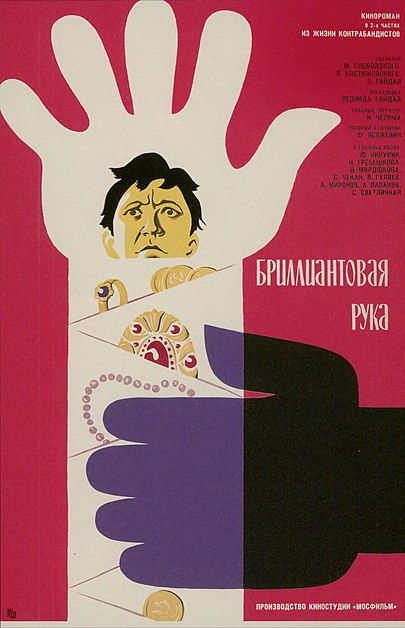

Бриллиантовая рука

Агент-перевозчик контрабанды Геша, он же Геннадий Петрович Козодоев (Андрей Миронов), отправляется в зарубежный круиз на теплоходе «Михаил Светлов». Герой по распоряжению Шефа (Николай Романов) должен доставить в Советский Союз золото и бриллианты. Для выполнения задания ему нужно во время стоянки в Стамбуле найти пункт передачи контрабандного товара, находящийся под вывеской «Apotheke Chikanuk», изобразить падение и произнести пароль «Чёрт побери!». Гешин сосед по каюте — старший экономист «Гипрорыбы» Семён Семёнович Горбунков (Юрий Никулин), впервые выехавший за границу по турпутёвке, — случайно появляется возле аптеки раньше, чем Козодоев. Не заметив валяющуюся на мостовой арбузную корку, турист ступает на неё, падает и непроизвольно восклицает: «Чёрт побери!». Эти слова становятся сигналом для торговцев контрабандой — Аптекаря (Григорий Шпигель) и его помощника (Леонид Каневский). Аптекарь препровождает Горбункова в одно из помещений своего заведения, осматривает и вправляет вывихнутую руку. От боли Семён Семёнович ненадолго теряет сознание. Придя в себя, он обнаруживает, что незнакомцы накладывают на его руку гипсовую повязку, пряча между слоями драгоценности. По возвращении на теплоход Горбунков рассказывает о происшествии капитану. В морском порту Семёна Семёновича встречает — под видом таксиста — офицер милиции Михаил Иванович (Станислав Чекан). Он предлагает герою выполнить роль «подсадной утки», на которую должны выйти злоумышленники, и даёт инструктаж относительно дальнейших действий.
Назад Википедия Трейлер